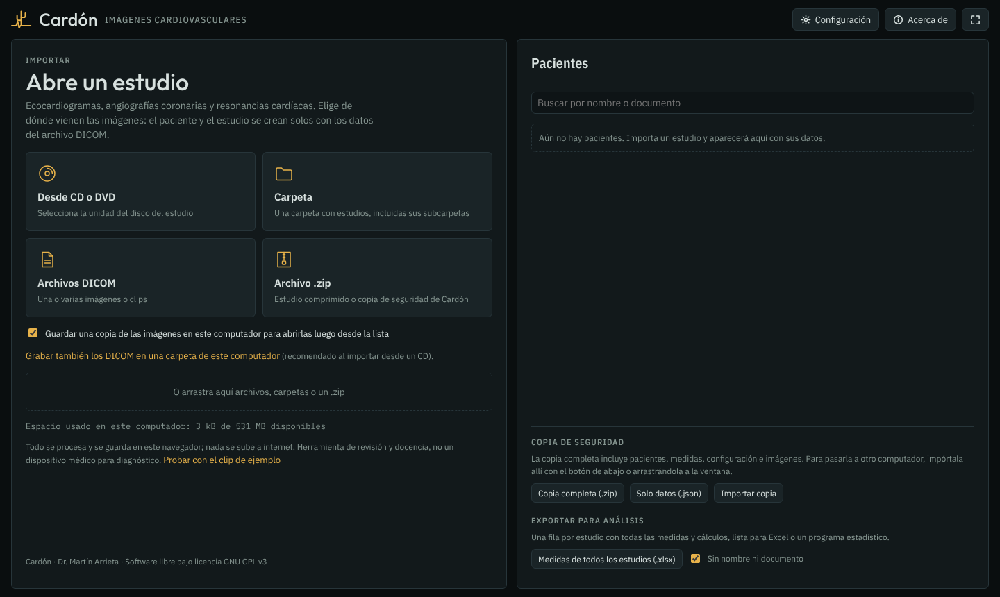

Software libre · Uso educativo
Visor DICOM para imágenes cardiovasculares
Ecocardiograma, angiografía coronaria, TC y RM cardíacas en un solo programa, con pacientes, mediciones y reporte. Gratis, sin internet, y las imágenes nunca salen de tu computador.

Qué hace
Abre los estudios desde un CD, una carpeta o un .zip. El paciente y el estudio se crean solos con los datos del archivo DICOM.
Ecocardiograma
- Dimensiones, masa y volúmenes por Simpson
- Doppler: velocidades, ITV, gradientes y áreas valvulares
- Modo M anatómico y motilidad en 17 segmentos
- Modo guiado en el orden habitual del estudio
Angiografía coronaria
- QCA semiautomático (estenosis por diámetro)
- Conteo de cuadros TIMI y blush miocárdico
- Árbol coronario con lesiones por segmento
- Medidas libres de raíz y aorta ascendente
TC cardíaca
- Score de calcio de Agatston por arteria
- Angio-TC coronaria con CAD-RADS 2.0
- Reconstrucción multiplanar, planos oblicuos y MIP
- Reconstrucción curva de una coronaria
RM cardíaca
- Cines con reproducción sincronizada
- Contornos semiautomáticos de las cavidades
- Volúmenes, fracción de eyección y masa
Pacientes y reportes
- Base de pacientes en el propio computador
- Reporte en Word con tu encabezado y logo
- Medidas de todos los estudios a Excel
- Caso anonimizado (.zip) para docencia
Sin internet y bilingüe
- Un solo archivo que funciona sin conexión
- Copia rápida de los CD al computador
- Español e inglés
- Contraseña opcional para los datos
Instalar
No necesita permisos de administrador ni internet. Abre maximizado, como un programa, con su propio icono.
Windows
- Descarga el instalador y descomprímelo (clic derecho → Extraer todo).
- Doble clic en Instalar Cardon.bat. Si Windows avisa, elige Más información → Ejecutar de todas formas.
- Abre Cardón con el icono del Escritorio o del menú Inicio.
Para actualizar, ejecuta de nuevo el instalador de la versión nueva: los pacientes se conservan.
Linux (Ubuntu)
- Descarga y descomprime el mismo instalador.
- En una terminal, dentro de la carpeta:
sh instalar-linux.sh - Abre Cardón desde el menú de aplicaciones.
Necesita Chrome, Chromium o Edge. También puedes usarlo directamente en el navegador, sin instalar.
Privacidad
Todo se procesa y se guarda en el computador donde se usa. Cardón no tiene servidor, no envía imágenes ni datos a internet y no usa cuentas. Cada computador tiene su propia base de pacientes; para pasarla a otro, usa la copia de seguridad.
Solo para uso educativo
Cardón es una herramienta de revisión y docencia. No es un dispositivo médico, no está certificado para diagnóstico y no reemplaza el software del equipo ni la valoración del especialista. Se entrega tal cual, sin garantía de ningún tipo.
Licencia y código
Cardón es software libre bajo la GNU GPL v3 o posterior: puedes usarlo, copiarlo, estudiarlo, modificarlo y compartirlo sin costo. Quien distribuya versiones modificadas debe mantenerlas libres y con su código. El código fuente está en la carpeta codigo de este repositorio.
| Componente incluido | Uso | Licencia |
|---|---|---|
| dicomParser | Lectura de archivos DICOM | MIT |
| OpenJPEG (codec de Cornerstone) | Imágenes JPEG 2000 | BSD-2-Clause · MIT |
| CharLS (codec de Cornerstone) | Imágenes JPEG-LS | BSD-3-Clause · MIT |
| jpeg-lossless-decoder-js | Imágenes JPEG sin pérdida | MIT |
| JSZip | Archivos .zip | MIT o GPLv3 |
| docx | Reportes en Word | MIT |
| IBM Plex y Outfit | Tipografías | SIL Open Font License 1.1 |
English: Cardón is a free (GPL v3) DICOM viewer for echocardiography, coronary angiography and cardiac CT and MRI. It runs offline in Edge or Chrome and keeps all images and data on your own computer. It can be switched to English in Settings. For education only; not a medical device.